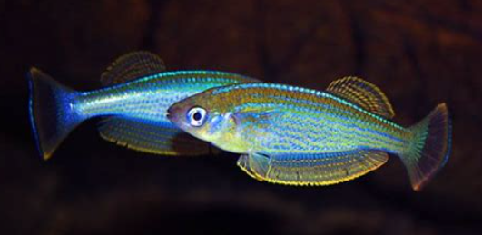

Systématique
- Ordre : Cyprinodontiformes
- Famille : Procatopodidae
- Genre : Lamprichthys
- Espèce : L. tanganicanus
- Auteur : Boulenger, 1898

Lamprichthys tanganicanus est le seul représentant de son genre et l'unique killie endémique du lac Tanganyika. C'est un poisson d'une beauté exceptionnelle, arborant des écailles nacrées aux reflets bleu métallique et jaune-orangé. Son corps est allongé, comprimé latéralement, et sa tête est légèrement aplatie sur le dessus.
Il s'agit du plus grand killie d'Afrique, les mâles pouvant atteindre une taille imposante de 14 à 15 cm, tandis que les femelles restent plus petites (environ 10 cm). Sa robe est parsemée de points brillants disposés en rangées longitudinales. Contrairement à de nombreux Cyprinodontiformes, il possède une vessie natatoire bien développée, adaptée à une vie pélagique côtière.
C'est un poisson grégaire et très vif qui vit en bancs parfois importants dans les zones rocheuses littorales du lac. Lamprichthys tanganicanus est un nageur infatigable qui occupe les couches supérieures de l'eau. Bien qu'il soit pacifique, son activité incessante peut stresser des espèces trop calmes.
En aquarium, il est extrêmement sensible au stress lors du transport et de l'acclimatation. Il nécessite un grand volume de nage et une eau d'une pureté exemplaire. C'est un poisson craintif qui peut sauter hors du bac au moindre effroi ; un couvercle hermétique est donc indispensable. Il se sent plus en sécurité dans des bacs profonds avec un éclairage intense mettant en valeur ses reflets irisés.
Mode : ovipare, pondeur sur substrat rocheux (lithophile).
[Image of fish egg development stages]Sa stratégie de reproduction est unique parmi les killies : il ne pond pas dans la végétation mais dépose ses œufs dans les fissures et les crevasses des rochers. La femelle utilise un long ovipositeur pour insérer les œufs profondément dans les anfractuosités. Le mâle fertilise la ponte immédiatement après.
L'éclosion intervient après environ 10 à 14 jours selon la température. Les alevins sont très fragiles et nécessitent une eau parfaitement stable. Ils acceptent les nauplies d'artémias dès la nage libre. En raison de sa sensibilité aux polluants, l'élevage des jeunes est considéré comme difficile.
Dimorphisme sexuel : très marqué. Le mâle est plus grand, beaucoup plus coloré avec des nageoires dorsale et anale plus développées et pointues. La femelle est plus terne, généralement argentée, avec des nageoires plus courtes et arrondies.
Espérance de vie : environ 3 à 5 ans en aquarium, bien que sa fragilité puisse réduire cette durée en cas de paramètres instables.
L'espèce fréquente exclusivement le littoral rocheux du lac Tanganyika. Elle est particulièrement abondante là où les rochers tombent à pic dans l'eau, créant de nombreuses cachettes naturelles. On la trouve généralement dans les premiers mètres sous la surface, là où la lumière est la plus forte et l'eau la plus oxygénée.
Répartition

Origine naturelle :
- Afrique de l'Est : Endémique du lac Tanganyika.
- Présent sur tout le pourtour du lac (Burundi, Tanzanie, Zambie, RD Congo).
- Localité type : Lac Tanganyika.
Paramètres de maintenance
Température : 24 à 26 °C.
pH : 8,2 à 9,2 (eau très alcaline indispensable).
GH : 10 à 20 °dGH (eau dure).
Courant : modéré à fort pour une oxygénation maximale.
Volume conseillé : minimum 400 litres pour un groupe en raison de sa taille et de sa vivacité.
Régime alimentaire
Régime : carnivore insectivore.
Dans la nature, il se nourrit de petits insectes tombés à l'eau et de micro-crustacés. En aquarium, il accepte les nourritures sèches de qualité, mais son éclat dépend d'apports réguliers en nourritures vivantes ou surgelées (artémias, daphnies, vers de vase blancs).